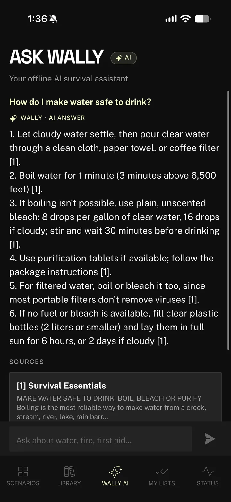
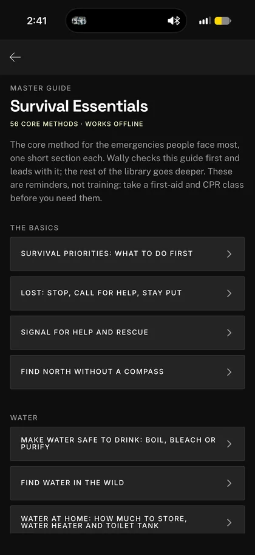
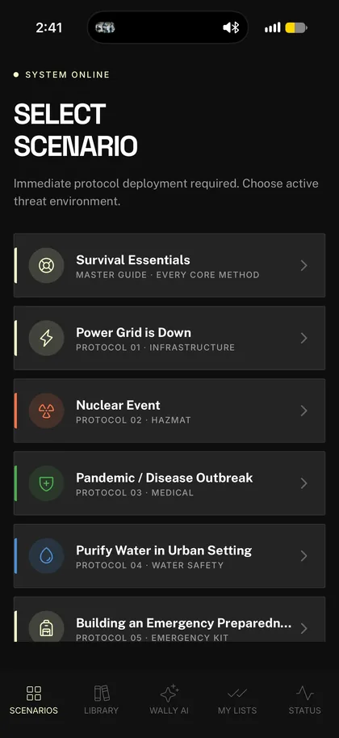
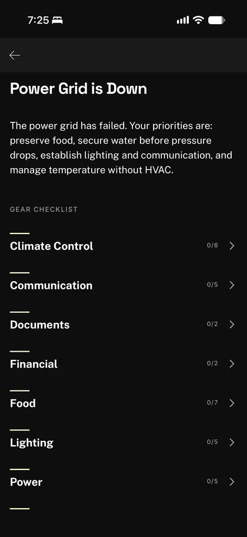

Survival Essentials, the master guide
The core method for 56 emergencies, from severe bleeding, CPR and choking to house fires, floods and tornadoes. One short, step-by-step section each, written from CDC, FEMA and U.S. Army guidance.
No service and it still works
BugOut puts 68 field guides, the U.S. Army Survival Manual, step-by-step disaster plans and Wally, an AI survival assistant that runs on your iPhone, in your pocket. No internet, no account.
Free download for iPhone. BugOut Pro unlocks every scenario, Survival Essentials and Ask Wally.

Answered offlineand it shows its sources
Wally is an AI survival assistant built into BugOut. Ask in plain words and it answers from BugOut's own library, leading with the core method from Survival Essentials and showing the passages each answer is based on.
How do I make water safe to drink?
Wally, AI answer
[1] Survival EssentialsMake water safe to drink: boil, bleach or purify
Everything is stored on your iPhone, so it's there when the network, the power or the trail runs out.
The core method for 56 emergencies, from severe bleeding, CPR and choking to house fires, floods and tornadoes. One short, step-by-step section each, written from CDC, FEMA and U.S. Army guidance.
The U.S. Army Survival Manual (FM 21-76), Army first aid and land navigation manuals, cold-weather and Marine Corps survival courses, and 36 original guides on power outages, storms, water and more. All free and searchable.
Power grid down, nuclear event, pandemic, purifying water in a city, building a kit, the first 72 hours, and surviving with children or older adults. Each has a step-by-step plan and a gear checklist.
Guides, checklists, your own gear lists and the phone's sensors all work offline: GPS coordinates, battery time-to-empty, plus a compass and barometer with Pro.



BugOut Pro is $6.99 a month or $54.99 a year through your Apple ID. Cancel any time in your App Store settings.
| Feature | Free | BugOut Pro |
|---|---|---|
| 68 field guides, including the Army Survival Manual | All of them | All of them |
| Survival Essentials | The first method in each of 12 topics | All 56 methods |
| Disaster scenarios | Power grid down and nuclear event | All 7 |
| Ask Wally, the offline AI assistant | Not included | Included |
| Your own gear lists | Included | Included |
| Battery, GPS and connectivity status | Included | Included |
| Compass, barometer and sunrise/sunset | Not included | Included |
Printable checklists written from CDC, EPA and FEMA guidance. Read them now, or carry them offline in the app.
Before the storm, frozen pipes, staying warm without power, and your car.
What to keep in your car year-round, winter add-ons, and if you're stranded.
The 72-hour checklist: water, food, shelter, first aid, tools and documents.
What to do when the power goes out: food safety, generators, heat and cold.
How long to boil it, how much bleach per gallon, and which filters work.
How much water and food your household needs for 3 days to 2 weeks.
Priorities, signaling, shelter, fire, water, navigation and first aid.
A practical 4-week plan: risks, water, food, go bags and power outages.
18 practical gift ideas from FEMA's kit list, and what to look for in each.
Yes. BugOut is built to work with no internet at all. The field guides, Survival Essentials, the disaster scenarios, your gear lists and the phone's GPS and battery tools all work in airplane mode, with no account. Only buying or restoring BugOut Pro needs a connection.
It depends on what you need it for. For getting through an emergency, look for an app that works offline, gives step-by-step instructions instead of long articles, and says where its advice comes from. BugOut was built around those three things. For alerts and shelter locations, pair it with the FEMA app or a NOAA weather radio, which need a signal or a broadcast.
No. Wally runs entirely on your iPhone and answers from BugOut's own library, so it works with no signal and your questions never leave your phone. Written answers need an iPhone with Apple Intelligence (iPhone 15 Pro or newer) on iOS 26 or later, once Apple Intelligence is turned on and has finished its one-time download. On other iPhone models, Wally shows the most relevant passages from the guides instead. Wally is part of BugOut Pro, and like any AI it can make mistakes, so check the source before you rely on an answer.
Yes. BugOut includes the U.S. Army Survival Manual (FM 21-76), along with the Army's first aid and map reading manuals and cold-weather and Marine Corps survival courses. They're free, searchable and stored on your phone.
The download is free, and so are all the field guides, your own gear lists, two full scenarios (power grid down and nuclear event), the first method in each Survival Essentials topic, and the battery, GPS and connectivity tools. BugOut Pro ($6.99 a month or $54.99 a year) adds all 7 scenarios, all 56 Survival Essentials methods, Ask Wally, and the compass, barometer and daylight tracking.
From public sources you can check: U.S. military field manuals, the CDC, EPA, FEMA and Ready.gov, the American Red Cross, the National Weather Service and the National Park Service. Survival Essentials lists the sources it was written from, and every Wally answer links to the BugOut passages it's based on. BugOut is a reference, not a substitute for training, so take a first-aid and CPR class too.
Any iPhone with iOS 16 or later. Ask Wally's written answers need an iPhone with Apple Intelligence (iPhone 15 Pro or newer) on iOS 26 or later. BugOut is available on the U.S. App Store.
Download BugOut while you have a connection. Then it's there when you don't.
Get BugOut on the App Store